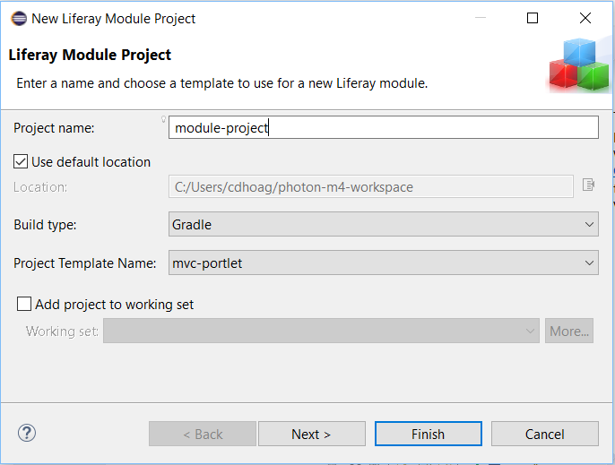

Modules are OSGi-based projects used to develop Liferay applications. In Liferay Workspaces, Gradle is the build tool used to create Liferay modules. Before you can begin creating your Liferay module projects from a Liferay Workspace, you’ll need to create a Liferay Workspace, which is covered in the Creating a Liferay Workspace tutorial. Once you’ve created your Liferay Workspace, you can begin using it to create Gradle-based OSGi modules for @product@.
You can create modules in a Workspace via Blade CLI or by using Liferay IDE. Because Liferay IDE uses the Blade CLI infrastructure under the hood, both options offer the same flexibility and options. You can learn more about Blade CLI in the Blade CLI section of tutorials. In this tutorial, you’ll learn about using a Liferay Workspace to create modules via Blade CLI and Liferay IDE.
Creating Liferay modules in a workspace using Blade CLI is very similar to creating them in a standalone environment. You can find the details of how to create a module project using Blade CLI in the Creating Modules with Blade CLI tutorial.
In summary, you can view the available module templates you can create your project from by running blade create -l. Each available template can be examined in more detail from the link mentioned above. When creating modules in a workspace, you should navigate to the /modules directory to create your project. You can also provide further directory nesting into the /modules directory, if preferred. Your workspace, by default, sets the directory where your modules should be stored by setting the following property in the workspace’s gradle.properties file:
liferay.workspace.modules.dir=modules
Change this property if you’d like to store your modules in a different directory.
When using Blade CLI, you’ll have to manually edit your project’s component class. Blade CLI gives you the ability to specify the class’s name, but all other contents of the class can only be edited after the class is created. See the next section on Using Liferay IDE for further details and important dependency information on component classes.
It’s as simple as that! You now know how to create modules in a Liferay Workspace using Blade CLI’s module templates. The great thing about Blade CLI is that it can be used by any IDE that provides Gradle support (e.g., Eclipse, IntelliJ, and Netbeans), which offers great flexibility. Because of this, Liferay IDE takes advantage of Blade CLI by providing a GUI for you to work with. You’ll learn how to use Liferay IDE to create modules next.
IDE provides a Module Project Wizard for users to create a variety of different module projects. You can create a new Liferay module project by navigating to File → New → Liferay Module Project.

Figure 1: When selecting New → Liferay Module Project, a Module Project Wizard appears.
You’re presented options for project name, location, build type, and template type. Currently, you’re only able to create a Gradle-based module. The project templates will look familiar to you if you’ve already read through the Blade CLI tutorials. The same templates are provided through this wizard as what was available through Blade CLI. Click Next and you’re given additional configuration options for a component class.
Figure 2: Specify your component class’s details in the Portlet Component Class Wizard.
You can specify your component class’s name, package name, and its properties. The properties you assign are the ones found in the @Component annotation’s property = {...} assignment.
Once you’ve configured your module project’s component class, click Finish to create your project.
You can also create a new component class for a pre-existing module project. Navigate to File → New → Liferay Component Class. This is a similar wizard to the previous component class wizard, except you can select a component class template. There are many templates in the Component Class
Template list:
Once you’ve created your module project, you can configure your project’s presentation in the IDE’s Project Explorer. To change the project’s presentation,
IDE also provides a method to import existing module projects. You can import a module project by navigating to File → Import → Liferay → Liferay Module Project(s), then point to the project location. Once you’ve selected the project to import, click Finish.
Figure 3: Select the Liferay Module Project(s) to import a module project.